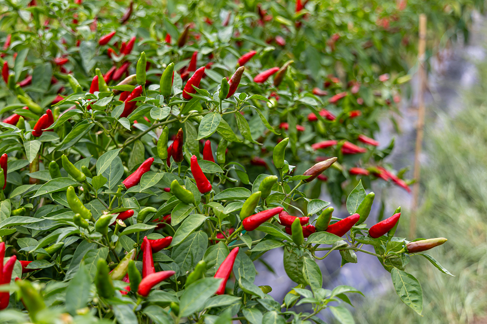
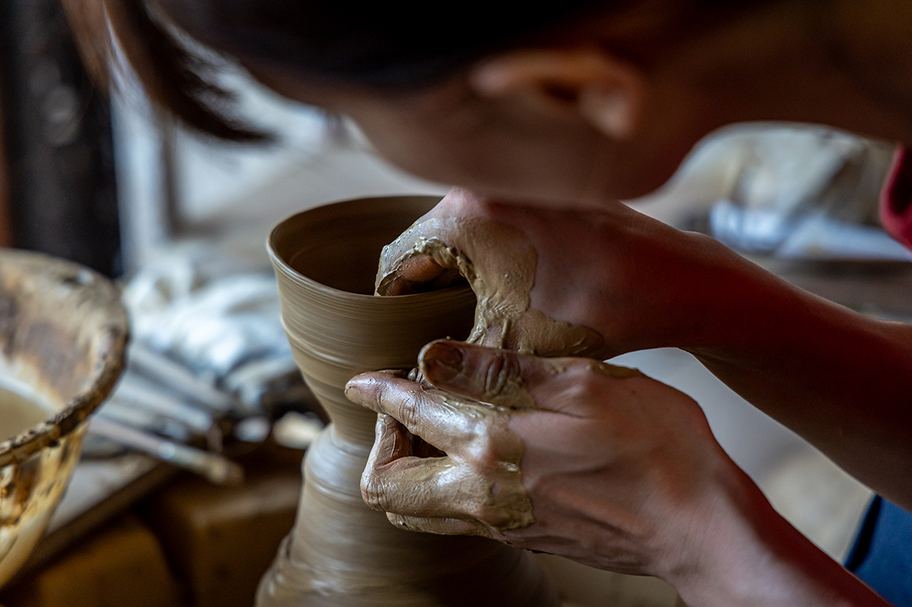
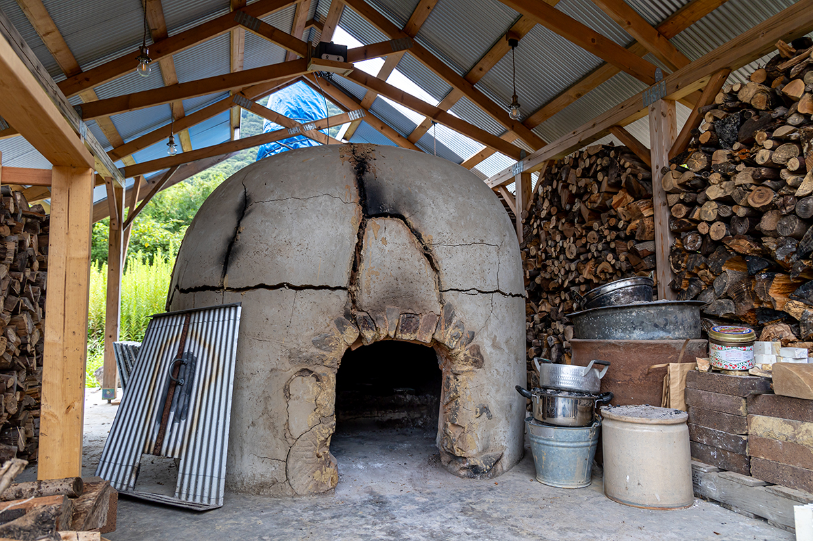

Префектура Кагава · острова Сиваку · Керамика
Керамика острова Тэсима: посуда из глины, ракушек и трав острова

Прохладный морской ветер делает осень лучшим временем для поездок по островам. На маленьком острове Тэсима в архипелаге Сиваку молодые художники делают керамику из того, что даёт сама земля.
Остров
Двадцать человек, подсолнухи и перец
Остров Тэсима в архипелаге Сиваку, не путать с островом Тэсима в Сэтоути, где стоят художественные объекты, самый малолюдный в своей группе: здесь живёт около двадцати человек. Летом поля подсолнухов красят остров в жёлтый, а ещё тут выращивают острый перец старинного кагавского сорта. Жизнь тихая, но живая. Из порта Такамацу по островам архипелага Сиваку идут морские прогулки.
В последние годы несколько молодых художников переехали сюда: они поняли, что именно такая среда, вдали от большого города, обостряет чувство и лучше всего подходит для работы руками. Особенно интересна здешняя керамическая мастерская, ради которой стоит плыть на остров.
Мастерская
Тэсима тоэн: всё сырьё с острова
Мастерскую и галерею открыл керамический дуэт, влюблённый в остров. Глину, ракушки, растения для глазури и дрова для обжига здесь берут только на Тэсиме.

Дровяную печь в глубине мастерской они сложили сами. Природа вносит свои правки: даже при одинаковых материалах результат каждый раз получается разным.


Тэсима тоэн
- Адрес
- префектура Кагава, Маругамэ, Тэсима-тё, 1575
- Осмотр
- возможен по предварительной договорённости
- Контакты
- аккаунт мастерской в Instagram, @teshima_toen